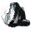

The Dailies Calendar is updated after reset. Hover over an icon to see its achievement name.
 Events
Events
Hover over the  icon on the map pane and checkmark the option
icon on the map pane and checkmark the option  to show Dynamic Events. Then, hover over the
to show Dynamic Events. Then, hover over the  icon to view the list of zones sorted by their regions. Click a zone name under the region of today's Event Completer to show where events can happen and find them in game. Alternatively you can do world bosses for their high number of chained events.
icon to view the list of zones sorted by their regions. Click a zone name under the region of today's Event Completer to show where events can happen and find them in game. Alternatively you can do world bosses for their high number of chained events.
 Vista
Vista
 Vista
VistaHover over the icon on the map pane and checkmark the option to display World Completion icons. The fastest vista to view should be the ones next to asura gates in cities.
 Gathering
Open the Resource Nodes section of this page to show rich metal nodes or plant farms. Nodes in your home instance (regardless of your character's race) counts as region gatherer: Divinity's Reach is Kryta, Black Citadel is Ascalon, Hoelbrak is Shiverpeaks, Rata Sum and The Grove are Maguuma Jungle.
Miscellaneous
- Activity
- Go to the blue/red flag icon in a city to start. These may be time consuming except for Crab Toss.
- Mystic Forgesmith
- Buy 4 cheapest minor sigils on the Trading Post.
- Fractal Adept: 2, 10, X
- Do scale 2 (Bloomhunger), scale 10 (Molten Boss), backup scale 3 (Aquatic), and finally the daily scale.
- Fractal Journeyman: 21, 32, X
- Do scale 21 (Mossman), scale 32 (Bloomhunger), backup scale 40 (Molten Boss), and finally the daily scale.
- Fractal Master: 56, 80, X
- Do scale 56 (Bloomhunger), scale 80 (Molten Boss), backup scale 90 (Molten Boss), and finally the daily scale.
- WvW Big Spender
- Go to the Armor/Weapon Master NPC at the citadel of your borderland and buy the skins (not the armor). Alternatively, replenish your deployable traps.
- PvP Dailies
- Open the PvP window and click on the Game Browser tab. Look for rooms that say "dailies"; they are specifically for completing dailies and you do not have to fight. You can complete the "Reward" and "Rank" dailies instantly by consuming the potion received from daily rewards. For "Defender", you need to get a kill while the capture point is fully captured by your color.
 Jumping Puzzles
Jumping Puzzles